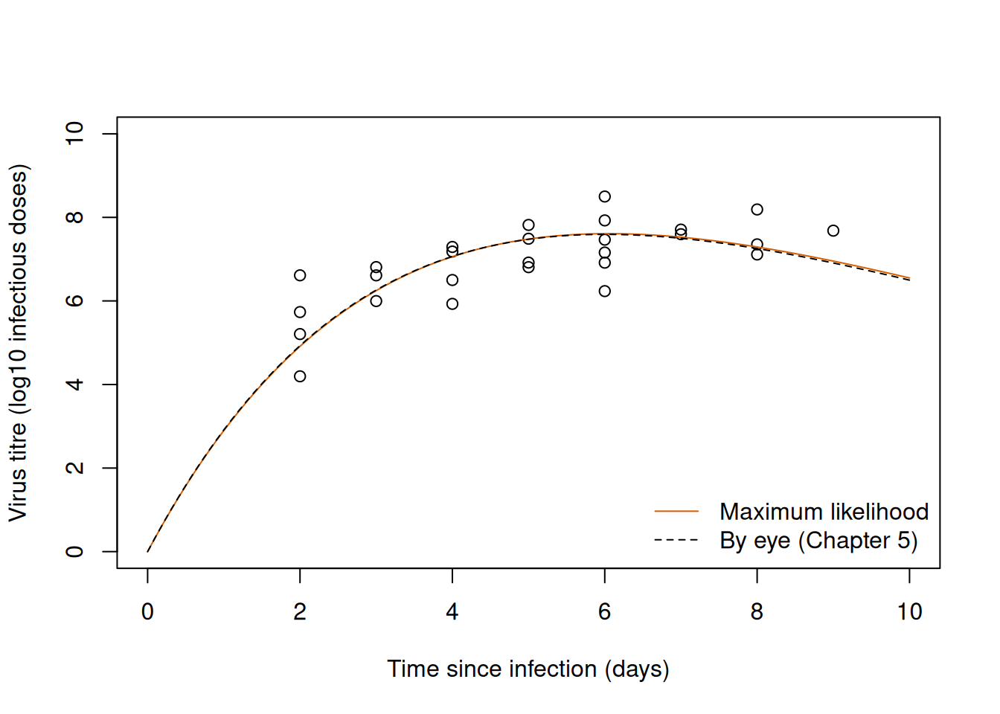
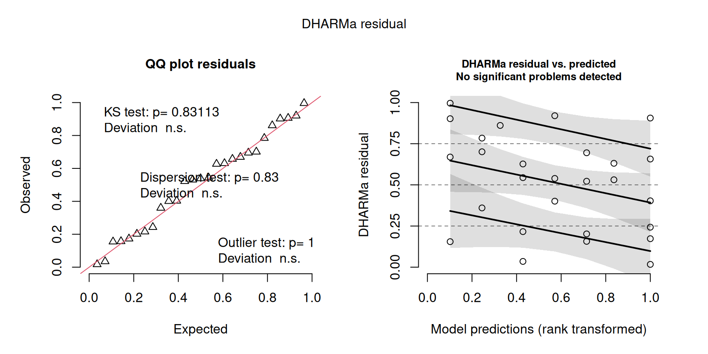
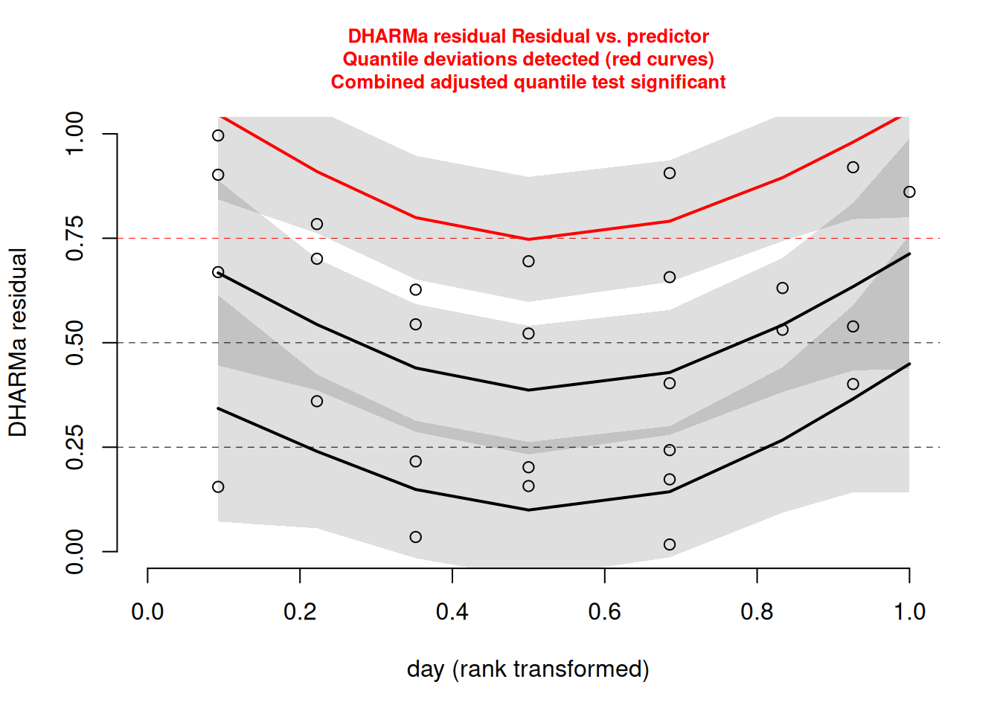

# Load RTMB first and RTMBdist second.
library(RTMB)
library(RTMBdist)Chapter 6: Fitting ecological response curves
The exercises fit response curves to three data sets that the Chapter 5 practical used as a backdrop for curves placed by eye: the titre of a virus in infected rabbits (Exercise 1), the rate of an enzymatic reaction (Exercise 2) and the fecundity of fir trees (Exercise 3). Exercise 4 simulates hypothetical samples from the model fitted in Exercise 1. Exercises 1 to 3 are the core of the practical and Exercise 4 is extra practice. Work through the first exercise, which is worked in full on this page, before trying the remaining ones. The ideas and notation are introduced in the Chapter 6 theory, and the hints of each question point to the section that you need. Work through the exercises in one R session: later exercises reuse the helper cmb() and the objects critical_value and n_sim of Exercise 1.
As in the theory, every model is written and fitted with the packages RTMB and RTMBdist, which you installed in the Chapter 1 practical together with emdbook, where the data of Exercises 1 and 3 are. The scaled quantile residuals are calculated with the package DHARMa, which you need to install once with install.packages("DHARMa"). Load RTMB first and RTMBdist second:
1 Exercise 1: Virus titre in infected rabbits
The data set MyxoTiter_sum in the package emdbook contains the titre of the myxoma virus in the blood of European rabbits on different days after infection, for viruses of four grades (Fenner and McIntyre 1956; the values were read from a figure in Dwyer et al. 1990). The titre measures the concentration of virus and is expressed as the logarithm in base 10 of the number of rabbit infectious doses. As in the Chapter 5 practical, we keep the 27 observations of grade 1, which were taken between 2 and 9 days after infection, and put the day and the titre of each observation in a list of data:
# Load the myxomatosis data from the emdbook package without attaching the package.
data(MyxoTiter_sum, package = "emdbook")
# Keep the observations of virus grade 1: the day after infection and the titre.
grade_1 = MyxoTiter_sum[MyxoTiter_sum$grade == 1, ]
titre_data = list(day = grade_1$day, titre = grade_1$titer)In Exercise 1 of the Chapter 5 practical we described the rise and fall of the titre with the Ricker function, \(f(x)=a\,x\,e^{-bx}\), where \(x\) is the time since infection in days. From a peak read by eye on day 6 with a titre of 7.6 we calculated \(a=3.44\) units of titre/day and \(b=1/6\approx0.167\)/day. Here we fit the curve to the observations, which we treat as independent.
- On paper, write the model with the Ricker curve for the mean titre and a Normal observation model with a constant standard deviation \(\sigma\). Give the units of \(a\), \(b\) and \(\sigma\). The titres in these data are all positive; why can a Normal model, which allows any real value, be used for them?
- Write the negative log-likelihood (NLL) with \(\log(a)\), \(\log(b)\) and \(\log(\sigma)\) as parameters, and fit it from the values read by eye in the Chapter 5 practical. Check the convergence, report the estimates with their units, and draw the fitted curve over the data together with the curve by eye.
- Calculate the standard errors and the correlation between the estimates with
sdreport(). Ask for the time of the peak, \(1/b\), and the height of the peak, \(a/(be)\), on their original scale withADREPORT(), and calculate 95% Wald intervals for both. Why can these intervals be calculated on the original scale here? Then calculate the likelihood profile interval of \(b\) withTMB::tmbprofile()andconfint(), and from it an interval for the time of the peak. Compare the two intervals for the time of the peak. - Simulate 1,000 hypothetical samples from the fitted model with
simulate(), and calculate the scaled quantile residuals with DHARMa. Plot them, also against the day of the observation, and say what they show. - Fit the same curve with a Gamma observation model, with
dgamma()and the argumentsshapeandscale = mu / shape. How does the spread of the titres around the curve differ between the two models? Compare them with AIC, AICc and BIC. Why do the three criteria give the same difference here?
1.1 Solution
1.1.1 Question 1
Let \(Y_i\) be the titre of observation \(i\) and \(x_i\) the day after infection on which it was measured. The curve describes the mean titre on each day, and the titres vary around it according to a Normal distribution:
\[ Y_i \sim \operatorname{Normal}\left(f(x_i),\,\sigma^2\right), \qquad f(x)=a\,x\,e^{-bx}, \qquad i=1,\ldots,27, \]
where \(f(x_i)\) is the mean titre on day \(x_i\) and \(\sigma\) is the standard deviation of the titres around the curve, the same on every day (\(\sigma^2\) is the variance of the model). The mean of a Normal distribution can take any real value, so the curve needs no outer function to give it the right range (see From a response curve to a model for observations). The units of \(a\) and \(b\) are those of Chapter 5: \(b\) is in 1/day, because \(bx\) is the argument of an exponential and has no units, and \(a\) is in units of titre/day, because \(ax\) must have the units of the titre. The standard deviation \(\sigma\) measures the spread of the observations, so it has the units of the titre (log10 infectious doses).
A Normal model gives a positive probability to negative titres, which do not occur in these data. This does not matter when that probability is negligible. The titres lie between 4.2 and 8.5 and vary by about one unit among the observations of the same day, so if the curve passes near the observations its value lies many standard deviations above zero. We check this after the fit.
1.1.2 Question 2
The NLL has the form of the theory: a list of parameters, with the logarithms of the three positive parameters, and a list of data, with the predictor (day) and the response (titre). Because day is a vector, the line of the curve returns the mean titre of every observation, and dnorm() uses the mean of each observation:
# Negative log-likelihood of the Ricker curve with a Normal observation model.
normal_nll = function(parms, data) {
# Make the elements of both lists available by name.
getAll(parms, data)
# Transform the parameters to the original scale.
a = exp(log_a)
b = exp(log_b)
sigma = exp(log_sigma)
# Mean titre on the day of each observation.
mu = a * day * exp(-b * day)
-sum(dnorm(x = titre, mean = mu, sd = sigma, log = TRUE))
}We start from the values read by eye in Chapter 5. For \(\sigma\) we take 1 unit of titre, roughly the spread of the observations of one day. We give the starting values to MakeADFun() on the log scale and fit the model:
# Connect a likelihood to a data set.
cmb = function(f, d) function(p) f(p, d)
# Starting values: the values read by eye in the Chapter 5 practical, and sigma = 1.
titre_start = list(log_a = log(3.44), log_b = log(1 / 6), log_sigma = log(1))
# Process the NLL, minimise it with BFGS and check the convergence code.
normal_obj = MakeADFun(cmb(normal_nll, titre_data), titre_start, silent = TRUE)
normal_fit = optim(
par = normal_obj$par,
fn = normal_obj$fn,
gr = normal_obj$gr,
method = "BFGS"
)
normal_fit$convergence[1] 0# Estimates on the original scale.
a_mle = exp(normal_fit$par[["log_a"]])
b_mle = exp(normal_fit$par[["log_b"]])
sigma_mle = exp(normal_fit$par[["log_sigma"]])
c(a = a_mle, b = b_mle, sigma = sigma_mle) a b sigma
3.4181655 0.1652275 0.6700115 The convergence code is 0. The estimates are \(\hat a\approx3.42\) units of titre/day, \(\hat b\approx0.165\)/day and \(\hat\sigma\approx0.67\) units of titre. The first two are close to the values read by eye (3.44 and 0.167). We can now check the argument of question 1. The lowest mean titre in the data is the one of day 2, and the probability that the fitted model gives to a negative titre on that day is the cumulative probability of zero:
# Ricker function: initial slope a and rate b.
ricker = function(x, a = 1, b = 1) {
a * x * exp(-b * x)
}
# Mean titre on day 2 under the fitted model, and the probability of a negative titre.
ricker(2, a = a_mle, b = b_mle)[1] 4.912565pnorm(q = 0, mean = ricker(2, a = a_mle, b = b_mle), sd = sigma_mle)[1] 1.133199e-13The mean titre on day 2 is 4.9, more than seven standard deviations above zero, and the probability of a negative titre is of the order of \(10^{-13}\). The Normal model can be used here because the titres are far from zero compared with their spread.
We draw the fitted curve over the data, together with the curve by eye of Chapter 5 (Figure 1):
# Observations, with axes that start at zero.
plot(titre ~ day, data = titre_data, xlim = c(0, 10), ylim = c(0, 10),
xlab = "Time since infection (days)", ylab = "Virus titre (log10 infectious doses)")
# Fitted curve and curve by eye.
curve(ricker(x, a = a_mle, b = b_mle), add = TRUE, col = "#D55E00")
curve(ricker(x, a = 3.44, b = 1 / 6), add = TRUE, lty = 2)
legend("bottomright", legend = c("Maximum likelihood", "By eye (Chapter 5)"),
lty = c(1, 2), col = c("#D55E00", "black"), bty = "n")
The two curves are almost the same. The peak that we read by eye happened to be close to the peak of the fitted curve, and in the Ricker function the peak determines both parameters.
1.1.3 Question 3
The time and the height of the peak are quantities calculated from the parameters, so we ask for their standard errors with ADREPORT() inside the NLL, as in Uncertainty of the fitted curve. We also mark the titres with OBS(), which question 4 needs in order to simulate. We process the new NLL and fit it again (the estimates do not change):
# The NLL with the time and the height of the peak in ADREPORT(), and the titres marked
# as observations for the simulations of question 4.
normal_nll = function(parms, data) {
getAll(parms, data)
titre = OBS(titre)
a = exp(log_a)
b = exp(log_b)
sigma = exp(log_sigma)
# Time (days) and height (units of titre) of the peak of the curve.
peak_time = 1 / b
peak_titre = a / (b * exp(1))
ADREPORT(peak_time)
ADREPORT(peak_titre)
mu = a * day * exp(-b * day)
-sum(dnorm(x = titre, mean = mu, sd = sigma, log = TRUE))
}
# Process the new NLL and fit it again.
normal_obj = MakeADFun(cmb(normal_nll, titre_data), titre_start, silent = TRUE)
normal_fit = optim(
par = normal_obj$par,
fn = normal_obj$fn,
gr = normal_obj$gr,
method = "BFGS"
)
normal_fit$convergence[1] 0summary() of the result of sdreport() has one row for each parameter, on the scale that was optimised, and one row for each quantity in ADREPORT(), on the scale on which it was calculated. cov2cor() gives the correlations between the estimates of the parameters:
# Standard errors of the parameters (log scale) and of the two quantities of the peak.
normal_sd = sdreport(normal_obj)
summary(normal_sd) Estimate Std. Error
log_a 1.2291040 0.05942752
log_b -1.8004320 0.06327389
log_sigma -0.4004604 0.13607803
peak_time 6.0522616 0.38295013
peak_titre 7.6105545 0.15035055cov2cor(normal_sd$cov.fixed) log_a log_b log_sigma
log_a 1.000000e+00 9.500711e-01 3.801877e-05
log_b 9.500711e-01 1.000000e+00 -1.961625e-05
log_sigma 3.801877e-05 -1.961625e-05 1.000000e+00The standard errors on the log scale are about 0.06 for \(\log(\hat a)\) and \(\log(\hat b)\), so both parameters are estimated to within a few percent, and 0.14 for \(\log(\hat\sigma)\). The estimates of \(\log(a)\) and \(\log(b)\) are strongly correlated (0.95): a curve with a steeper initial rise (a larger \(a\)) must also decline sooner (a larger \(b\)) to keep its peak at the height of the observations.
We asked for the time and the height of the peak on their original scale, in days and in units of titre, so their Wald intervals are calculated on that scale. The theory calculates Wald intervals on a scale on which the quantity is unbounded (Uncertainty of the fitted curve), because an interval on the original scale can cross the bound when the estimate is close to it. Both quantities are positive, but their estimates lie about 16 and 50 standard errors above zero, so here an interval on the original scale cannot reach the bound:
# 95% Wald intervals of the time and the height of the peak, on the original scale.
critical_value = qnorm(p = 0.975)
peak_summary = summary(normal_sd, select = "report")
cbind(
estimate = peak_summary[, "Estimate"],
lower = peak_summary[, "Estimate"] - critical_value * peak_summary[, "Std. Error"],
upper = peak_summary[, "Estimate"] + critical_value * peak_summary[, "Std. Error"]
) estimate lower upper
peak_time 6.052262 5.301693 6.802830
peak_titre 7.610554 7.315873 7.905236The peak is estimated on day 6.05 (95% Wald interval from 5.30 to 6.80 days) at a titre of 7.61 (from 7.32 to 7.91). The height is well determined because many observations lie near the peak.
For the likelihood profile interval we profile \(\log(b)\), transform the endpoints back with exp(), and obtain the interval for the time of the peak from that of \(b\). The function \(1/b\) decreases as \(b\) increases, so the endpoints swap:
# Profile of log(b). The profile contains the estimate twice, so confint() warns that it
# collapses repeated values; the warning can be ignored.
normal_profile_b = TMB::tmbprofile(normal_obj, name = "log_b", trace = FALSE)
# 95% interval for b (1/day), and for the time of the peak (days).
b_interval = exp(confint(normal_profile_b))
b_interval lower upper
log_b 0.1439547 0.1864634rev(1 / b_interval)[1] 5.362984 6.946631The likelihood profile interval of \(b\) goes from 0.144/day to 0.186/day, almost symmetrically around the estimate of 0.165. The corresponding interval for the time of the peak goes from 5.36 to 6.95 days: it extends 0.69 days below the estimate and 0.89 days above it, because \(1/b\) is a curve that stretches the values of \(b\) below the estimate more than those above it. The Wald interval for the time of the peak (5.30 to 6.80 days) is symmetric by construction, because the delta method treats \(1/b\) as a straight line near the estimate. So, compared with the profile interval, it is shifted towards earlier days. The two intervals differ by less than a fifth of a day at each end, which is small compared with their width; the extra Exercise 4 shows what it means for the coverage of the Wald interval.
1.1.4 Question 4
The titres are marked with OBS(), so the function simulate() of the object draws one hypothetical sample of 27 titres, on the same days as the data, for the parameter values that we give it. We store 1,000 hypothetical samples in a matrix with one row per observation:
# 1,000 hypothetical samples of the 27 titres at the estimates: one row per observation
# and one column per hypothetical sample.
n_sim = 1000
normal_simulations = matrix(NA, nrow = length(titre_data$titre), ncol = n_sim)
set.seed(seed = 611)
for (j in seq_len(n_sim)) {
normal_simulations[, j] = normal_obj$simulate(normal_fit$par)$titre
}DHARMa::createDHARMa() calculates the residuals from the simulations, with the arguments of the theory. The expected value of each observation is the mean titre of its day, and the titres are continuous, so integerResponse = FALSE: two titres are almost never equal, and no ties need to be drawn at random. plot() draws the two standard panels (Figure 2), and DHARMa::plotResiduals() with the argument form draws the residuals against the day (Figure 3):
# Expected titre of each observation under the fitted model.
normal_expected = ricker(titre_data$day, a = a_mle, b = b_mle)
# Scaled quantile residuals from the simulations, and the two standard panels.
normal_residuals = DHARMa::createDHARMa(
simulatedResponse = normal_simulations,
observedResponse = titre_data$titre,
fittedPredictedResponse = normal_expected,
integerResponse = FALSE
)
plot(normal_residuals)
# Residuals against the day of the observation.
DHARMa::plotResiduals(normal_residuals, form = titre_data$day)
In the quantile–quantile plot the residuals follow the line, so their distribution is close to uniform, and none lies outside the range of its simulations. The right panel of Figure 2 orders the observations by their expected titre, which first increases and then decreases with the day, so the pattern in time is clearer in Figure 3. There the residuals tend to lie above 0.5 on the first days and on the last days, and below 0.5 around the peak: the observations lie slightly above the curve at both ends and slightly below it in the middle. This agrees with what we saw by eye in Chapter 5: the titre levels off after day 6, while the Ricker curve must decline after its peak. In Figure 3 DHARMa draws the line of the upper quartile in red, because its test gives a small p-value. As in the theory, we read the plot as exploratory evidence and not as a decision: with 27 observations and one to six per day the pattern rests on few observations, but it suggests that the Ricker curve describes the titre after the peak only approximately. A curve with a third parameter, such as the generalised Ricker function, could be fitted and compared with it.
DHARMa also calculates a dispersion statistic, but for a Normal model it is not informative: \(\sigma\) is estimated from the spread of the observations around the curve, so the simulated spread matches the observed spread almost by construction.
1.1.5 Question 5
A Gamma distribution with shape \(k\) and scale \(\mu/k\) has mean \(\mu\) and variance \(k(\mu/k)^2=\mu^2/k\), so its standard deviation is \(\mu/\sqrt{k}\): the spread of the titres is proportional to the mean, with a coefficient of variation \(1/\sqrt{k}\) that is the same on every day. In the Normal model the spread is the same on every day, whatever the mean. The Gamma model also gives a probability of zero to negative titres. The NLL takes the logarithm of the shape as its third parameter; we start from the values by eye and a shape of 10:
# Negative log-likelihood of the Ricker curve with a Gamma observation model.
gamma_nll = function(parms, data) {
getAll(parms, data)
a = exp(log_a)
b = exp(log_b)
shape = exp(log_shape)
mu = a * day * exp(-b * day)
# A scale of mu / shape gives each observation the mean mu.
-sum(dgamma(x = titre, shape = shape, scale = mu / shape, log = TRUE))
}
# Process the NLL and fit it.
gamma_obj = MakeADFun(
cmb(gamma_nll, titre_data),
list(log_a = log(3.44), log_b = log(1 / 6), log_shape = log(10)),
silent = TRUE
)
gamma_fit = optim(
par = gamma_obj$par,
fn = gamma_obj$fn,
gr = gamma_obj$gr,
method = "BFGS"
)
gamma_fit$convergence[1] 0# Estimates on the original scale.
c(a = exp(gamma_fit$par[["log_a"]]), b = exp(gamma_fit$par[["log_b"]]),
shape = exp(gamma_fit$par[["log_shape"]])) a b shape
3.5612471 0.1713291 90.5119351 The fit converged, with \(\hat a\approx3.56\) units of titre/day, \(\hat b\approx0.171\)/day and a shape of about 90, which gives a coefficient of variation of about 0.11 (a standard deviation of about 0.8 units of titre at the peak and 0.5 on day 2). Both models have three parameters and are fitted to the same 27 titres in the same units, so we can compare them with the criteria of the theory, with \(n=27\):
# AIC, AICc and BIC of the two models, with K = 3 parameters and n = 27 observations.
n_obs = length(titre_data$titre)
k_models = c(normal = 3, gamma = 3)
nll_models = c(normal = normal_fit$value, gamma = gamma_fit$value)
aic = 2 * k_models + 2 * nll_models
aicc = aic + 2 * k_models * (k_models + 1) / (n_obs - k_models - 1)
bic = k_models * log(n_obs) + 2 * nll_models
rbind(aic = aic, aicc = aicc, bic = bic) normal gamma
aic 60.99968 65.01829
aicc 62.04316 66.06176
bic 64.88719 68.90580All three criteria prefer the Normal model, by 4.0 units. The difference is the same for the three criteria because the two models have the same number of parameters and are fitted to the same observations: the penalty is the same for both models within each criterion, and the difference between the models is twice the difference between their maximum log-likelihoods. So the comparison says that the titres are more probable under a spread that is the same on every day than under a spread that grows with the mean. This is plausible, because the titre is already a logarithm: variation by a constant factor in the number of infectious doses becomes a constant spread on the logarithmic scale. With 27 observations, however, the evidence is moderate. The curve itself hardly depends on the choice: the estimates of \(a\) and \(b\) differ by a few percent between the two models.
2 Exercise 2: Enzyme kinetics
The data set Puromycin of base R contains the rate of an enzymatic reaction (rate, in counts/min/min) at six concentrations of the substrate (conc, in parts per million, ppm), measured in cells that were treated with the antibiotic puromycin (12 observations) and in untreated cells (11 observations) (Treloar 1974, in Bates and Watts 1988). The column state says to which of the two groups an observation belongs. Load the data with data(Puromycin, package = "datasets").
In Exercise 6 of the Chapter 5 practical we placed a Michaelis–Menten curve, \(f(x)=ax/(b+x)\), by eye over the observations of each state: \(a=210\) counts/min/min for the treated cells and \(a=165\) counts/min/min for the untreated cells, with \(b=0.06\) ppm for both. By eye, the states differed in the asymptote and not in the half-maximum. In this exercise we fit and compare two models with a Normal observation model with a constant standard deviation \(\sigma\), and treat the 23 observations as independent.
- Write the model with one Michaelis–Menten curve for both states, with the units of \(a\), \(b\) and \(\sigma\). Fit it, starting from values close to those read by eye, check the convergence, and draw the curve over the data with a different symbol for each state. Hint: the list of data holds the predictor and the response, as in Fitting a response curve by maximum likelihood. In
plot(), the argumentpch = ifelse(Puromycin$state == "treated", 16, 1)draws the treated cells as filled circles and the untreated cells as open circles. - Fit a model in which each state has its own asymptote \(a\), with a common \(b\) and \(\sigma\). Use an index vector with the number of the state of each observation, as in question 6 of Exercise 1 of the Chapter 4 practical. Draw both curves over the data. How does the estimate of \(\sigma\) change, and why? Hint:
as.numeric()of the factorstategives the index vector. Iflog_astarts as a vector of two values,a[state]inside the NLL is the asymptote of each observation, and the first two elements of theparof the fit are the two values oflog_a. - Ask for the difference between the two asymptotes with
ADREPORT(), and calculate a 95% Wald interval for it. On which scale do you calculate the interval, and why? What does the treatment with puromycin do to the maximum rate of the reaction? Hint: the difference is calculated inside the NLL, as the difference between two probabilities in that question of the Chapter 4 practical; for the scale, see Uncertainty of the fitted curve. - Calculate the likelihood profile interval of \(b\) in the model of question 2 and compare it with the Wald interval from the log scale. Why do the two intervals agree so much better than those for the handling time of the reed frogs in the theory? Hint: compare the range of the concentrations with the estimated half-maximum, and recall where the densities of the reed frog tanks stopped (“Standard errors and correlation of the parameters” and “Likelihood profile intervals of the parameters” in Uncertainty of a response curve).
- Compare the two models with AIC, AICc and BIC, and with leave-one-out cross-validation (23 fits for each model), for which you complete the two gaps of the code below the questions. Do the criteria agree? Hint: see “Information criteria” and “Cross-validation” in Comparing candidate models.
- Simulate 1,000 hypothetical samples from the model that the criteria prefer, calculate the scaled quantile residuals with DHARMa, and plot them, also against the concentration of the substrate. What do you see, and what can you conclude from 23 observations? Hint: proceed as in question 4 of Exercise 1 (the rates must be marked with
OBS()in the NLL); the expected rate of an observation is the curve of its state at its concentration.
The code below calculates the leave-one-out log score of the two models. It needs the helper cmb(), the list of data enzyme_data with the elements conc, rate and state, and the NLLs and starting values of the two models, pooled_nll(), pooled_start, state_nll() and state_start; if you gave them other names, change them in the code. The functions fit_model() and subset_observations() work like fit_model() and subset_tanks() in the theory. The theory scores the held-out tank by calling the NLL with as.list(fit$par), but that does not work when a parameter is a vector, as log_a is here: as.list() splits it into two elements with the same name, and the score becomes NA. Gap 2 therefore processes the NLL of the held-out observation with MakeADFun(). In each gap, replace NA by your own code, and keep the names of the objects that the gap creates.
# Fit one model to one list of data, from the given starting values.
fit_model = function(nll, start, data) {
obj = MakeADFun(cmb(nll, data), start, silent = TRUE)
optim(par = obj$par, fn = obj$fn, gr = obj$gr, method = "BFGS")
}
# Keep only the given observations in the list of data.
subset_observations = function(data, rows) {
data$conc = data$conc[rows]
data$rate = data$rate[rows]
data$state = data$state[rows]
data
}
# The NLL and the starting values of each model.
enzyme_models = list(
pooled = list(nll = pooled_nll, start = pooled_start),
state = list(nll = state_nll, start = state_start)
)
# Leave-one-out log score of each model: fit to 22 observations, score the one held out.
n_enzyme = length(enzyme_data$rate)
loo_enzyme = c(pooled = NA, state = NA)
n_failed = 0
for (m in seq_along(enzyme_models)) {
score = 0
for (i in seq_len(n_enzyme)) {
# GAP 1: fit model m (its NLL and starting values are in enzyme_models[[m]]) with
# fit_model() to every observation except observation i, and store the result in an
# object called fit.
fit = NA
n_failed = n_failed + (fit$convergence != 0)
# GAP 2: process the NLL of model m for observation i alone with MakeADFun(), from the
# starting values of the model, and store the result in an object called heldout_obj.
# Its function fn() at the estimates of the fit is minus the log density of
# observation i, so the line after the gap adds the log score to the total.
heldout_obj = NA
score = score - heldout_obj$fn(fit$par)
}
loo_enzyme[m] = score
}
n_failed
loo_enzyme3 Exercise 3: Fecundity of fir trees
The data set FirDBHFec_sum in the package emdbook contains the diameter at breast height (DBH, in cm) and the fecundity (fecundity) of 333 balsam fir trees (Abies balsamea) on Whiteface Mountain, New York (Silvertown and Dodd 1999; Dodd and Silvertown 2000). Fecundity was measured as the number of cone rachises on a tree: the rachis is the axis of a cone, which stays on the branch after the cone has fallen apart. Load the data with data(FirDBHFec_sum, package = "emdbook").
In Exercise 7 of the Chapter 5 practical we described the mean fecundity with a power law, \(\mu(x)=ax^b\), where \(x\) is the diameter, and read \(a=0.5\) and \(b=2\) from two points of the cloud. The trees come from two populations (the column pop). We do not model this grouping: we treat the trees as independent observations of one curve, which is a simplification (Chapter 7 deals with observations that come in groups).
- As in Exercise 7 of the Chapter 5 practical, remove the trees with a missing diameter, and check that no fecundity is missing. Why can a missing value not be replaced by zero? Some fecundities are not whole numbers: find them and decide what to do with them before you fit a model for counts. Hint:
x != round(x)isTRUEfor the elements ofxthat are not whole numbers. Rounding them and removing those trees are both defensible; say which you choose and why. - Write a Poisson model whose mean follows the power law, with the units of \(a\). Fit it from the values read by eye in the Chapter 5 practical, and check it with scaled quantile residuals from DHARMa and the dispersion statistic. Hint: the mean must be positive, but the exponent \(b\) can take any real value, so only \(a\) needs a transformation (see From a response curve to a model for observations). For the residuals, follow Checking the fitted model: the counts are whole numbers, as the numbers killed of the reed frogs were.
- Fit a Negative Binomial model with the same curve, with
dnbinom2()of RTMBdist (mean and shape \(k\)). Check its residuals, and draw the curves of both models over the data. Hint:dnbinom2()takes the mean inmuand the shape, which is positive, insize. - Compare the two models with AIC, AICc and BIC. Hint: \(n\) is the number of trees (see “Information criteria” in Comparing candidate models).
- For the model that the criteria prefer, calculate the likelihood profile interval of the exponent \(b\), and from it an interval for the factor \(2^b\) by which the mean fecundity changes when the diameter doubles. Do the data support a fecundity proportional to the cross-sectional area of the trunk (\(b=2\))? Hint: see “Likelihood profile intervals of the parameters” in Uncertainty of a response curve for transforming the endpoints of an interval; \(2^b\) increases with \(b\).
- For the same model, calculate the mean fecundity on a grid of diameters from 3 to 18 cm with
ADREPORT(), and its pointwise 95% confidence band from Wald intervals on the log scale. Draw the curve and its band over the data. Where along the diameters is the curve best determined, and why? Hint: follow Uncertainty of the fitted curve, with the logarithm of the mean in place of the logit of the probability;lines()adds the curve and the two limits of the band to the plot.
4 Exercise 4: Coverage of an interval for the time of the peak
This exercise is extra practice. In Exercise 1 the Wald interval and the likelihood profile interval for the time of the peak differed, and from one sample we cannot tell how often either of them contains the time of the peak of the data generating process. As in Exercise 5 of the Chapter 4 practical, we can find out by simulating hypothetical samples from a model whose parameters we know: here the Normal model fitted in Exercise 1, with the estimates as its parameters (see “Coverage checked by simulation” in Chapter 4). This exercise continues with the objects of Exercise 1. The function that runs the simulation is given below the questions with two gaps, which you fill in.
- Complete the first gap of the function
simulate_peak_time()below. Set seed 641 and simulate 2,000 hypothetical samples of the 27 titres, on the same days, from the fitted Normal model. Each sample is fitted from the values read by eye, as the data were. How many fits failed? Calculate the bias of the estimator of the time of the peak, with its Monte Carlo standard error, and compare the standard deviation of the estimates with the standard error of Exercise 1. Hint: the list of data of each sample needs the names thatnormal_nll()uses,dayandtitre. The bias is the mean of the estimates minus the time of the peak used to simulate, \(1/\hat b\) of Exercise 1. A Monte Carlo standard error measures how much a result of the simulation would vary if it were repeated with other random samples; for the bias, a mean of 2,000 estimates, it is the standard deviation of the estimates divided by \(\sqrt{2000}\). - Complete the second gap, which calculates the 95% Wald interval for the time of the peak from the row of
ADREPORT(), and calculate the coverage of the interval with its Monte Carlo standard error. (The coverage of the likelihood profile interval would needtmbprofile()in every sample, which takes much longer, so we do not simulate it here.) Hint: the coverage is a proportion \(c\) of 2,000 samples, so its Monte Carlo standard error is \(\sqrt{c(1-c)/2000}\), as in the solution of Exercise 5 of the Chapter 4 practical. - In how many samples does the interval lie entirely below the time of the peak that was used to simulate, and in how many entirely above it? What does this suggest, given the two intervals of question 3 of Exercise 1?
- Why do these results only approximate the behaviour of the interval for the real rabbits?
The function below needs normal_nll(), normal_obj, normal_fit, titre_data and titre_start from Exercise 1, the helper cmb(), and the object critical_value (the critical value of the standard Normal distribution for a 95% interval). It draws every sample with the function simulate() of the fitted object, and stores the results of every sample in one row of a data frame. In each gap, replace NA by your own code. The lines that follow a gap use the names of the objects that the gap creates, so keep those names.
# Hypothetical samples of the 27 titres from the Normal model fitted in Exercise 1. For
# each sample: the estimate of the time of the peak, its 95% Wald interval, and whether
# the fit converged.
simulate_peak_time = function(n_samples) {
results = data.frame(
estimate = rep(NA, times = n_samples),
lower = rep(NA, times = n_samples),
upper = rep(NA, times = n_samples),
converged = rep(NA, times = n_samples)
)
for (i in seq_len(n_samples)) {
# One hypothetical sample: titres on the same days, simulated at the estimates.
titre_sim = normal_obj$simulate(normal_fit$par)$titre
# GAP 1: connect normal_nll() to the days and the simulated titres and process it
# with MakeADFun(), starting from titre_start, and store the result in an object
# called sim_obj. Then fit it with optim() and method = "BFGS", and store the result
# in an object called sim_fit.
sim_obj = NA
sim_fit = NA
# GAP 2: from the row peak_time of summary(sdreport(sim_obj), select = "report"),
# the estimate of the time of the peak and the endpoints of its 95% Wald interval on
# the original scale, in objects called estimate, lower and upper.
estimate = NA
lower = NA
upper = NA
results$estimate[i] = estimate
results$lower[i] = lower
results$upper[i] = upper
results$converged[i] = sim_fit$convergence == 0
}
results
}